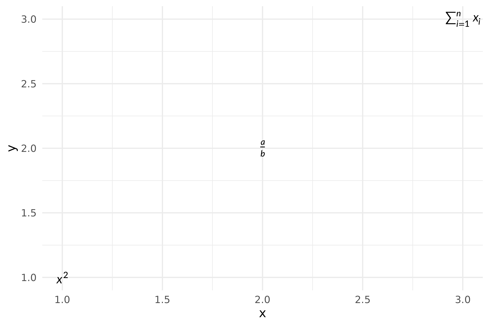
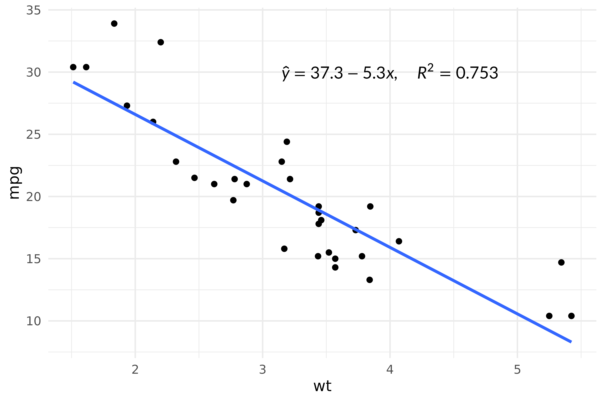
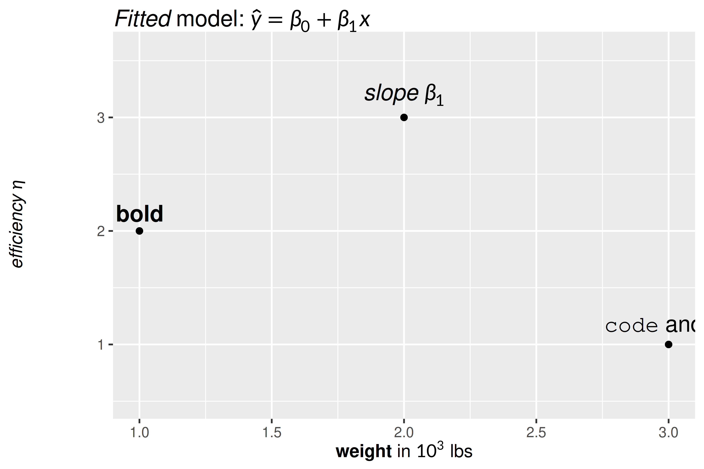
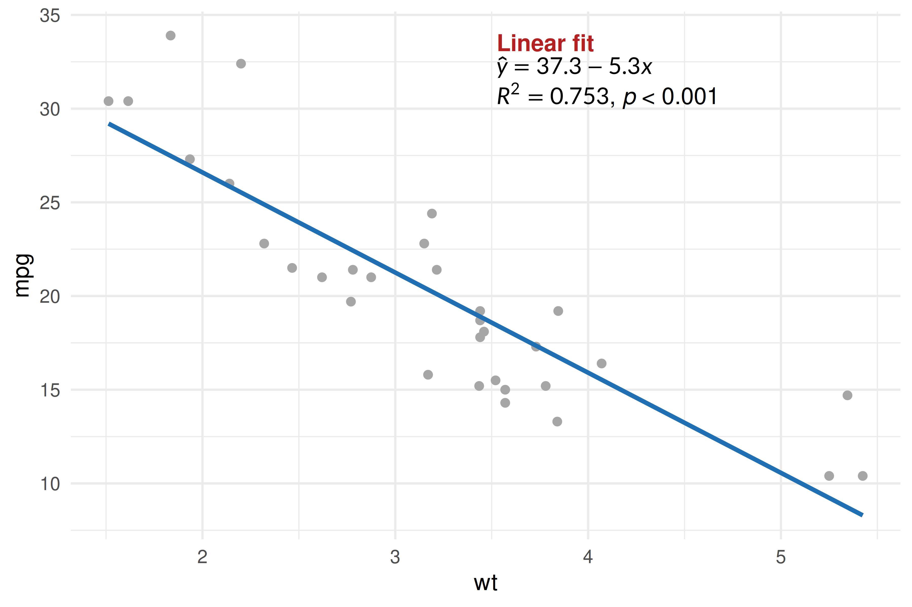
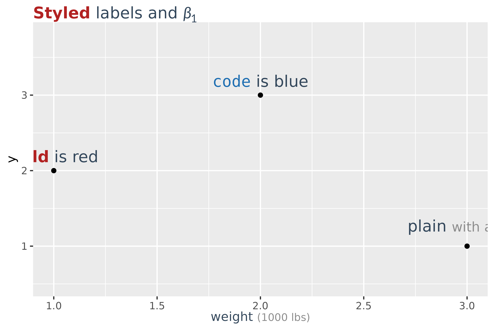
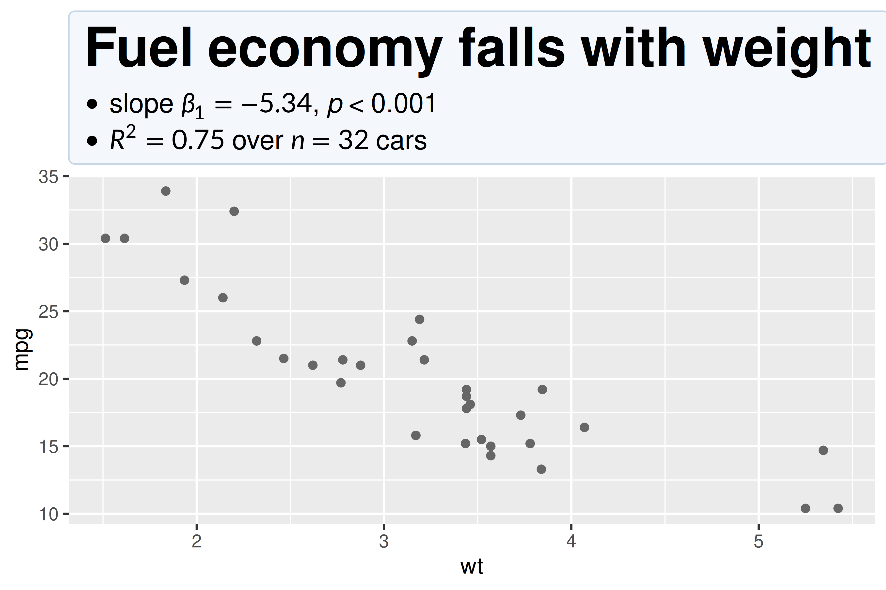

gridmicrotex provides ggplot2 extensions for rendering LaTeX math in plots:
-
geom_latex()— a geom layer for placing LaTeX labels at data coordinates. -
element_latex()— a theme element for rendering axis titles, plot titles, and other text elements as LaTeX.
There are matching geom_markdown() and
element_markdown() for labels written in markdown rather
than raw LaTeX — covered at the end of this vignette, and in more depth
in vignette("markdown").
Annotating plots with geom_latex()
geom_latex() works like geom_text() but
interprets the label aesthetic as a LaTeX math string. You
can also map the size (font size in points) and
colour aesthetics as usual. element_latex()
replaces a text theme element so that its label is rendered as LaTeX
math.
df <- data.frame(
x = 1:3,
y = 1:3,
eq = c(r"($x^2$)", r"(\frac{a}{b})", r"($\sum_{i=1}^n x_i$)"),
col = c("red", "blue", "green")
)
ggplot(df, aes(x, y,
label = eq,
colour = col,
size = c(14, 18, 14))) +
geom_latex() +
scale_colour_identity() +
scale_size_identity() +
labs(
x = r"($\beta_1 \cdot x + \beta_0$)",
y = r"($\mathrm{mpg}$)"
) +
theme(
axis.title.x = element_latex(fontsize = 14),
axis.title.y = element_latex(fontsize = 14)
)
Dollar-sign delimiters are stripped automatically here, so
r"(\frac{a}{b})" and r"($\frac{a}{b}$)"
produce the same output.
Adding equation annotations to a scatter plot
A common use case is annotating a regression fit with the model
equation. Use annotate("latex", ...) for single annotations
— it delegates to GeomLatex internally but avoids creating
a data frame and automatically hides the legend.
fit <- lm(mpg ~ wt, data = mtcars)
b0 <- round(coef(fit)[1], 1)
b1 <- round(coef(fit)[2], 1)
r2 <- round(summary(fit)$r.squared, 3)
eq_label <- sprintf(r"($\hat{y} = %s %s x, \quad R^2 = %s$)", b0, b1, r2)
ggplot(mtcars, aes(wt, mpg)) +
geom_point() +
geom_smooth(method = "lm", se = FALSE) +
annotate("latex", x = 4, y = 30, label = eq_label, size = 12) +
theme_minimal()
#> `geom_smooth()` using formula = 'y ~ x'
Markdown labels
When a label is more prose than formula — a bold phrase, an italic
word, a symbol in a sentence — geom_markdown() and
element_markdown() accept markdown with inline
$math$. They take the same aesthetics and theme slots as
their LaTeX counterparts; only the label syntax differs.
df <- data.frame(
x = 1:3,
y = c(2, 3, 1),
lab = c("**bold**", r"(*slope* $\beta_1$)", "`code` and $x^2$")
)
ggplot(df, aes(x, y, label = lab)) +
geom_point() +
geom_markdown(fontsize = 14, vjust = -0.6) +
ylim(0.5, 3.6) +
labs(
title = r"(*Fitted* model: $\hat{y} = \beta_0 + \beta_1 x$)",
x = "**weight** in $10^3$ lbs",
y = r"(*efficiency* $\eta$)"
) +
theme(
plot.title = element_markdown(fontsize = 14),
axis.title.x = element_markdown(),
axis.title.y = element_markdown()
)
Unlike element_latex(), element_markdown()
never strips $ delimiters — in markdown a
$...$ pair is the math, so removing it would
change the label.
Annotating with markdown
annotate("markdown", ...) is the markdown counterpart of
annotate("latex", ...). It suits a callout that is part
prose and part formula — and because <br> starts a
new line, one annotation can hold several:
fit <- lm(mpg ~ wt, data = mtcars)
note <- sprintf(
r"(**Linear fit**<br>$\hat{y} = %s %s x$<br>$R^2 = %s$, *p* < 0.001)",
round(coef(fit)[1], 1),
round(coef(fit)[2], 1),
round(summary(fit)$r.squared, 3)
)
ggplot(mtcars, aes(wt, mpg)) +
geom_point(colour = "grey65") +
geom_smooth(method = "lm", se = FALSE, colour = "#1F6FB2") +
annotate("markdown", x = 4.1, y = 32, label = note, size = 11,
style = "strong { color: #B22222 }") +
theme_minimal()
#> `geom_smooth()` using formula = 'y ~ x'
The LaTeX version of the same annotation would need
\text{} around every word and could not set the heading in
bold on its own line.
Styling labels
Both take a style: a markdown_style()
object, CSS text, or the path to a .css file. It is the
same cascade markdown_box_grob() uses — so a stylesheet can
set the look of every label at once, and
<span class=> picks out one run inside a label.
css <- "
body { color: #33475B }
strong { color: #B22222 }
code { color: #1F6FB2 }
.unit { color: grey55; font-size: smaller }
"
df <- data.frame(
x = 1:3, y = c(2, 3, 1),
lab = c("**bold** is red", "`code` is blue",
'plain <span class="unit">with a note</span>')
)
ggplot(df, aes(x, y, label = lab)) +
geom_point() +
geom_markdown(style = css, fontsize = 14, vjust = -0.8) +
ylim(0.5, 3.8) +
labs(title = r"(**Styled** labels and $\beta_1$)",
x = 'weight <span class="unit">(1000 lbs)</span>') +
theme(
plot.title = element_markdown(style = css, fontsize = 14),
axis.title.x = element_markdown(style = css)
)
On a single-run label only the properties that compile to LaTeX apply
— colour, the font-* family, decorations. Margins, padding
and backgrounds need block layout, which is the next section.
latex_options(markdown_style = ) sets a default for a whole
document, so the argument is only needed to override it.
Block titles
A label with real block structure — a heading, a list, a table, or
more than one paragraph — is laid out as blocks instead of being
flattened into a single run. There is nothing to switch on:
element_markdown() notices. That makes a title a small
document, and the body rule styles the box around it.
ggplot(mtcars, aes(wt, mpg)) +
geom_point(colour = "grey40") +
labs(title = r"(## Fuel economy falls with weight
- slope $\beta_1 = -5.34$, *p* < 0.001
- $R^2 = 0.75$ over $n = 32$ cars)") +
theme(plot.title = element_markdown(style = "
body { background: #F4F7FB; padding: 10px;
border: 1px solid #C7D6E5; border-radius: 4px }
"))
Two consequences of how ggplot2 measures theme elements are worth knowing.
Wrapping is opt-in. ggplot2 asks an element how tall
it is before it knows how wide the element’s cell will be, so a relative
width would be resolved against the whole device and the title would
reserve the wrong height. Without width the label is sized
to its content and never wraps. Pass one when you want wrapping —
unit(1, "npc") is the right value for a title, whose cell
really is the plot width.
Tick labels and rotated labels stay single runs.
Axis tick labels for the same measuring reason. Rotated labels because
the box cannot rotate: a rotated label with blocks in it keeps its
angle, renders as one run, and warns, since laying a
axis.title.y out horizontally across the panel would be the
worse of the two failures.